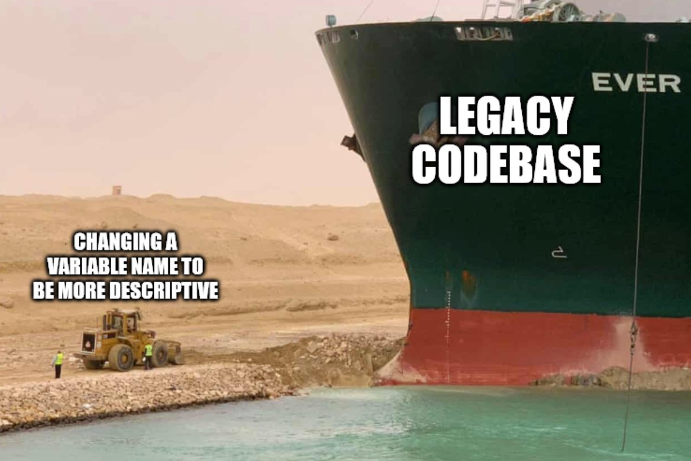
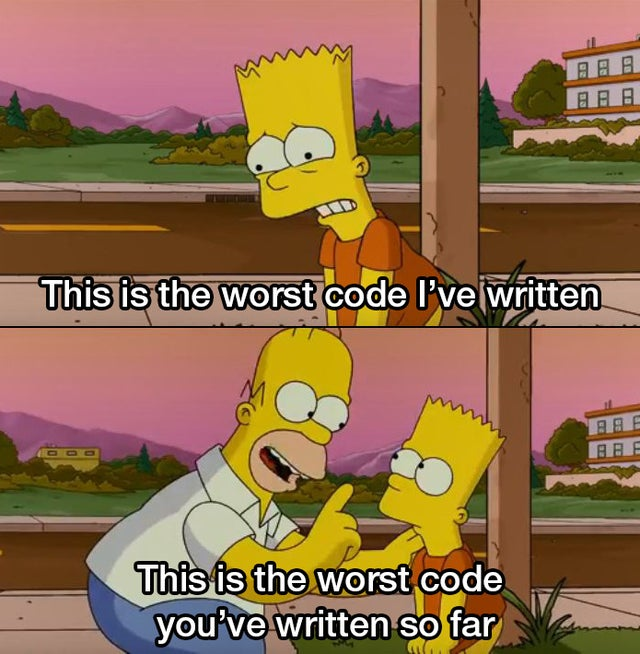

Hablemos de Entropía de Software
Hay un problema importante en ingeniería de software al que he dedicado parte de mi tiempo durante al menos los últimos cuatro o cinco años. Se trata de una idea, o intuición que por ahora vamos a denominar “entropía de software”. Y para motivar la conversación les mostraré algunos tweets y memes:
Explaining legacy code to new employees pic.twitter.com/pfXnNK5FMI
— Jen Gentleman 🌺 (@JenMsft) April 2, 2021
Maintaining the monolith. pic.twitter.com/cmnogXqh6n
— Allen Holub. https://linkedIn.com/in/allenholub (@allenholub) April 4, 2021


Voy a partir con el aspecto más teórico del problema. Para esto revisaremos primero el trabajo de Lehman y Bélády que se remonta a las décadas de 1970 y 1980.

Meir Manny Lehman
Meir M. Lehman junto con Lázló Bélády formularon en aquella época una serie de proposiciones que terminaron conociéndose como las “Leyes de la evolución del software de Lehman”.
Estas “leyes” describen cierto equilibrio de fuerzas que dirigen el desarrollo de nuevo software. Por un lado tenemos fuerzas que empujan nuevos desarrollos y por otro lado fuerzas que enlentecen el progreso.
Para entender el contexto de estas afirmaciones partiremos revisando un artículo de Lehman de 1980, donde introduce ciertas categorías, o clases de software.
Hasta ese entonces los programas se clasificaban sólo por su envergadura, es decir, programas grandes (large) y pequeños (non large). Esta clasificación no resultaba satisfactoria en ese tiempo (y mucho menos ahora).
Lehman parte reconociendo que todo programa es un modelo de la realidad. O como él dice: “al menos, cualquier programa es un modelo de un modelo dentro de una teoría de un modelo de una abstracción de alguna porción del mundo o de algún universo de discurso” 🤯.
Las clases introducidas por Lehman son tres: S, P y E.
Los S-programs corresponden al software cuya funcionalidad se define formalmente por una especificación S (specification). Es el programa que surge de la adherencia a un método formal, o proceso de desarrollo de software que contempla la elaboración de estas especificaciones. La especificación es muy precisa en este caso: “dadas estas entradas esperamos estas salidas”.
Según Lehman en la medida que las metodologías de desarrollo de software evolucionen todos los sistemas serán construidos como estructuras de s-programs. Este diagrama, tomado del paper de Lehman, muestra esta clase de programas:

s-program
En la visión de Lehman la especificación, que es una definición formal del problema, dirige y controla el trabajo del programador hacia la creación de un programa que define la solución deseada. En este caso la solución y su especificación son estáticas. Si el problema es reformulado entonces se debe escribir un nuevo programa (aunque para ahorrar tiempo podemos derivar el nuevo programa a partir del existentes). En esta clase de programas el código puede modificarse internamente, para mejorar su desempeño o su claridad, pero sigue preservando su adherencia a la especificación, dadas las mismas entradas se esperan las mismas salidas.
La siguiente clase de programas de Lehman corresponde a aquellos en que la especificación no es precisa. Esta especificación es un modelo de una abstracción de una situación del mundo real que contiene incertezas, incógnitas, criterios arbitrarios, variaciones, etc. En cierto punto refleja la visión personal del analista que la redacta. En este caso tanto la formulación del problema como su solución son una aproximación a la realidad del mundo. A estos tipos de programas Lehman los llamó P-programs (“real world problem solutions”).

P-program
En este caso existe un ciclo de comparaciones de esta solución con el entorno real. En los s-program la comparación es contra la especificación, en este otro caso la comparación es contra la realidad, verificamos si los valores obtenidos por el programa son válidos en el contexto del mundo real. Las diferencias entre la data derivada de la observación y la derivada de la computación causan cambios en nuestra visión del mundo, en la percepción del problema, su formulación, el modelo, la especificación y/o la implementación del programa. Cualquiera sea la causa de la diferencia provoca que el código y eventualmente su documentación deban cambiar. Este efecto no puede ser eliminado declarando que el problema es un nuevo problema (como hacemos con los s-programs), lo que ha cambiado es la percepción que tenemos del mismo problema.
Pero hay otro hecho relevante que debemos considerar. La insatisfacción surgirá no sólo porque la información recibida desde el programa es incompleta o incorrecta, o porque el modelo original era imperfecto. Esas imperfecciones se pueden superar con el tiempo. Lo que ocurre es que el mundo también cambia y esos cambios generan presión. Así que los p-programs sufrirán cambios de forma permanente o se volverán de modo paulatino cada vez menos efectivos en resultados y en costos.
La tercera clase de programas son inherentemente más expuestos al cambio. Son los que Lehman llama E-programs. Consideremos el caso de un problema logístico. Donde tenemos a distintos operadores en terreno que reciben instrucciones a través de la aplicación (en sus móviles por ejemplo), en que además ellos proveen de nueva información al sistema. En este caso, la instalación del programa junto con todo el sistema asociado (dispositivos, redes, etc.) cambia la misma naturaleza del problema a ser resuelto. El programa pasa a ser parte del mundo que modela.

e-program ciclo inicial
Aunque no consideremos la evaluación de los resultados de ejecución del programa en su ambiente operacional, este tiene un ciclo de retro alimentación intrínseco como el que se muestra en la figura Fig. 3. El análisis inicial de esta solución requiere hacer predicciones de las consecuencias de introducir este programa y de su potencial evolución.

e-program
Ejemplos de e-programs abundan, desde los sistema operativos hasta sistemas de control de tráfico aereo. En todos estos casos el comportamiento de la aplicación, las demandas de los usuarios y el soporte requerido dependerán de las características del programa. Esto llevará a que los usuarios modifiquen su comportamiento para adaptarse al sistema con el fin de minimizar el esfuerzo y maximizar su efectividad. Es inevitable que esto lleve a presiones por cambios. Adicionalmente las presiones exógenas también causan cambios en el ambiente donde la aplicación opera. Nuevo hardware, avances tecnológicos e incluso la evolución de la sociedad introducen también cambios. Más aún la naturaleza y la tasa de esta evolución estará fuertemente influenciada por las características del programa, en la medida que se liberan nuevas versiones del mismo. A diferencia de otros sistemas, acá la presión por el cambio es permanente e interna, es intrínseca a estos sistemas.
Es claro que los programas tipo P y E están relacionados, a la unión de estas dos clases Lehman los llama los programas de tipo A. Su gran diferencia con respecto a los tipo S es su aplicación e interacción con el mundo real.
Es claro que los s-program surgen en contextos formales, como las matemáticas por ejemplo. Un s-program puede ser la implementación de un algoritmo matemático o formal. Un autómata, o por ejemplo, una función específica. La gracia de los s-program es que pueden ser probados de forma rigurosa a partir de su especificación. Muchas componentes básicas de programas extensos son del tipo S. Por ejemplo algunas funciones o procedimientos matemáticos. Se puede postular que los sistemas A pueden particionarse en sub programas tipo S, esa es parte de la tesis de Lehman y es algo en lo que confiamos en la construcción de nuestros sistemas, descomponemos nuestros sistemas en módulos o funciones que podamos especificar de manera formal. Ese es al meno la aspiración de casi todas las metodologías rigurosas de desarrollo de software.
Lehman postula que siempre es posible descomponer programas de tipo A en muchos elementos de tipo S. Pero sabemos que el esfuerzo para lograr esto es enorme. Porque un s-program no sólo debería estar especificado de manera completa y precisa, sino que debería ser posible verificarlo también formalmente a partir de la especificación. Pero hacer esto no sería costo efectivo dada la complejidad intrínseca que el mismo Lehman identifica.
De todas maneras, Lehman sí identifica correctamente que la evolución es una propiedad intrínseca y dirigida por la retroalimentación del software. Con esto establece lo que él denomina las Leyes de la Evolución de un Programa (Laws of Program Evolution), que resumimos a continuación:
I. Cambio Continuo: Un programa que es usado sufrirá cambios continuos o se volverá progresivamente menos útil.
II. Complejidad Creciente: en la medida que evoluciona un programa este es continuamente modificado. Su complejidad, que refleja el deterioro en su estructura, aumentará a menos que se realicen trabajos para mantenerla o disminuirla.
III. Ley Fundamental de la Evolución de un Programa: La evolución del programa está sujeta a una dinámica que hace que el proceso de programación, y por lo tanto las medidas de los atributos globales del proyecto y del sistema, se autorregulen con tendencias e invariancias estadísticamente determinables.
IV. Conservación de la Estabilidad Organizacional (Tasa de Trabajo Invariante): Durante la vida activa de un programa la tasa global de actividad en un proyecto de programación es estadísticamente invariante.
V. Conservación de la Familiaridad (Complejidad Percibida): Durante la vida activa de un programa la liberación de contenido (cambios, adiciones, eliminaciones) de las sucesivas entregas de un programa que evoluciona es estadísticamente invariante.
Hoy en día se consideran como vigentes las primeras dos leyes de Lehman. Las otras son algo que obtuvo Lehman de la observación de distintos sistemas y procesos en ese tiempo. Su validez es algo que vamos a explorar más adelante.
La segunda ley es interesante en este contexto, puesto que se puede asimilar al concepto de entropía de la termodinámica, y es el aspecto que me parece más relevante de lo que plantea Lehman. En los siguientes artículos de esta serie vamos a explorar en profundidad estas ideas y ver si es posible medir la entropía del software y de qué manera esto nos puede ser útil.